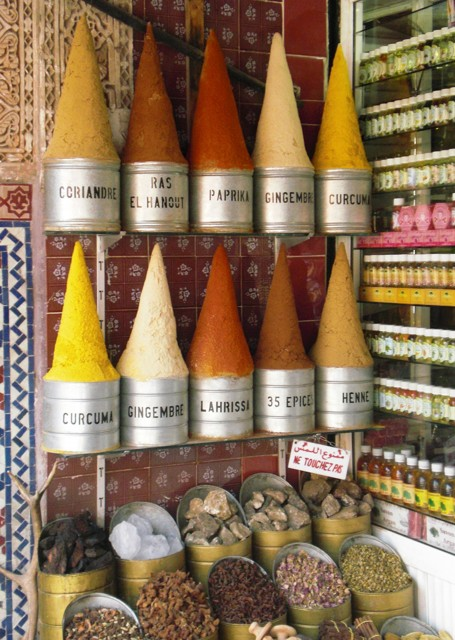

ZB-0235-v2 · authoring_candidate

{
"id": "ZB-0235-v2",
"blockers": [],
"review": [],
"advisory": [],
"metrics": {
"width": 1650,
"height": 2320,
"mode": "RGB",
"exif_orientation": 1,
"frame_count": 1,
"global_640_proxy": {
"contrast_p90_p10": 164.0,
"gray_entropy_bits": 7.803819851823131,
"edge_fraction_16": 0.18063495067133434
},
"object_count": 20,
"objects_per_MP": 5.2246603970741905,
"class_count": 17,
"known_fraction": 1.0,
"repeated_classes": 3,
"spatial_entropy_4x4": 0.8460459299447972,
"median_bbox_short_px": 260.5,
"p10_bbox_short_px": 220.9,
"edge_touching_count": 6,
"nearcolor_pair_count": 6,
"different_class_neighbor_pairs": 61,
"nearcolor_neighbor_fraction": 0.09836065573770492,
"bbox_overlap_pair_count": 12,
"han_text_coverage": 0.0,
"distinct_dependency_regions": 7,
"effective_counterfactuals": 3
},
"source": {
"kind": "real_photo",
"scene_id": "wikimedia-commons:16268679",
"authorization": "verified",
"url": "https://commons.wikimedia.org/wiki/File:Spices_for_sale_in_the_Morocco.jpg",
"license_url": "https://creativecommons.org/licenses/by/3.0/de/deed.en",
"author": "High Contrast",
"license": "CC BY 3.0 de",
"native_size": [
1650,
2320
],
"evidence": "source.json, source_page.html"
},
"difficulty_status": "no_complete_failure_recorded",
"annotation_provenance": "author_manual_native_pixels",
"preview": "001.jpg",
"nearcolor_pairs": [
{
"a": "R4",
"b": "R2",
"deltaE76": 8.191638477938318
},
{
"a": "R4",
"b": "R3",
"deltaE76": 7.885079711096355
},
{
"a": "R5",
"b": "R3",
"deltaE76": 9.949598603839329
},
{
"a": "E2",
"b": "R3",
"deltaE76": 7.095173932364968
},
{
"a": "E2",
"b": "R5",
"deltaE76": 9.469027092682673
},
{
"a": "E5",
"b": "E1",
"deltaE76": 7.976755889841115
}
],
"overlap_candidates": [
{
"a": "R4",
"b": "R3",
"iom": 0.18679245283018867
},
{
"a": "R5",
"b": "R4",
"iom": 0.1694915254237288
},
{
"a": "E2",
"b": "R3",
"iom": 0.22459893048128343
},
{
"a": "E2",
"b": "R4",
"iom": 0.2276056338028169
},
{
"a": "E2",
"b": "R5",
"iom": 0.18711746921318487
},
{
"a": "E3",
"b": "R1",
"iom": 0.33523525280898875
},
{
"a": "E3",
"b": "R2",
"iom": 0.22208567415730338
},
{
"a": "E4",
"b": "R2",
"iom": 0.22114232459060046
},
{
"a": "E4",
"b": "R4",
"iom": 0.18688524590163935
},
{
"a": "E4",
"b": "E3",
"iom": 0.1875
},
{
"a": "E5",
"b": "R1",
"iom": 0.17763984915147707
},
{
"a": "E5",
"b": "E1",
"iom": 0.6213662790697675
}
],
"roi_metrics": [
{
"id": "upper_tips",
"file": "001_roi1.png",
"contrast_p90_p10": 129.0,
"gray_entropy_bits": 7.319150043336711,
"edge_fraction_16": 0.032187814142995666
},
{
"id": "upper_names",
"file": "001_roi2.png",
"contrast_p90_p10": 181.0,
"gray_entropy_bits": 7.78198494658494,
"edge_fraction_16": 0.05427581129992025
},
{
"id": "lower_tips",
"file": "001_roi3.png",
"contrast_p90_p10": 114.0,
"gray_entropy_bits": 7.158538294031377,
"edge_fraction_16": 0.05042097782488768
},
{
"id": "lower_names",
"file": "001_roi4.png",
"contrast_p90_p10": 175.0,
"gray_entropy_bits": 7.7598846979632246,
"edge_fraction_16": 0.04809669975130509
},
{
"id": "rear_lids",
"file": "001_roi5.png",
"contrast_p90_p10": 135.0,
"gray_entropy_bits": 7.569004509181893,
"edge_fraction_16": 0.0474932166640968
},
{
"id": "front_lids",
"file": "001_roi6.png",
"contrast_p90_p10": 136.0,
"gray_entropy_bits": 7.597187829011402,
"edge_fraction_16": 0.052047775111831
},
{
"id": "blocked_lid",
"file": "001_roi7.png",
"contrast_p90_p10": 185.0,
"gray_entropy_bits": 7.5109997947099,
"edge_fraction_16": 0.06662357126387562
}
],
"reasoning_metrics": {
"node_count": 17,
"max_depth": 6,
"branch_nodes": 5,
"join_nodes": 7,
"multi_visual_join_nodes": 7,
"output_count": 4,
"outputs_with_visual_ancestry": 4,
"output_visual_coverage": 1.0,
"state_nodes": 2,
"parameter_nodes": 2,
"output_evidence_regions": {
"same_name": [
"lower_names",
"upper_names"
],
"counts": [
"blocked_lid",
"front_lids",
"lower_names",
"lower_tips",
"rear_lids",
"upper_names",
"upper_tips"
],
"optima": [
"blocked_lid",
"front_lids",
"lower_names",
"lower_tips",
"rear_lids",
"upper_names",
"upper_tips"
],
"representative_edges": [
"blocked_lid",
"front_lids",
"lower_names",
"lower_tips",
"rear_lids",
"upper_names",
"upper_tips"
]
}
},
"measurement_margins": [
{
"id": "bands",
"ratio": 2.4583333333333335,
"unit": "px"
},
{
"id": "window",
"ratio": 1.125,
"unit": "px"
}
],
"platform_points": [
{
"xy": [
1247,
718
],
"label": "上排第 5 罐正面的 CURCUMA，与下排左端同名。"
},
{
"xy": [
325,
1519
],
"label": "下排第 1 罐正面的 CURCUMA，沿罐口上溯到本罐锥尖。"
},
{
"xy": [
1135,
1690
],
"label": "白牌遮在右后方灰褐块罐的盖顶前，牌缘不可用作盖缘坐标。"
}
],
"evaluation_counts": {
"correct": 3,
"incorrect": 0,
"timeout": 0,
"infra_error": 0,
"partial": 0
},
"decision": "authoring_candidate"
}